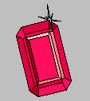

Garnet Project Home Page
Garnet was developed between 1987 and 1994 by the User Interface Software Group in the
Human Computer Interaction Institute  in the School of Computer Science at Carnegie Mellon University.
The primary research interest of the UISG is the
development of tools to allow rapid development of graphical user
interfaces.
in the School of Computer Science at Carnegie Mellon University.
The primary research interest of the UISG is the
development of tools to allow rapid development of graphical user
interfaces.
Garnet is a user interface development environment for Common Lisp and
X11 or Macintosh. It helps you create graphical, interactive user interfaces
for your software.
Unfortunately, the UISG is no longer able to support Garnet. See
our
letter
about why. However, some people are still using it (see below). There is
still a Garnet-Users mailing list. Send mail to garnet-users-request@cs.cmu.edu
to be added or removed.
The UISG then developed another tool, called
Amulet,
which is a successor to Garnet.
Amulet is a C++ environment which
incorporates the best ideas of Garnet, and also supports
gestures and other features. Amulet is
be portable across X/11, Windows and the Macintosh.
Click here
for more information on Amulet. (But Amulet is no longer supported either.)
Does anyone use Garnet anymore?
Maybe.
The Garnet-Users@cs.cmu.edu mailing list still had about 60 names on it (as
of May'2002). People seem to be using Garnet for various projects, and making it
work in new versions of Lisp. Send mail to garnet-users-request@cs.cmu.edu
to be added or removed.
There is a SourceForge project for Garnet (established May, 2002 by Cliff Yapp),
with complete source code and updates:
Fred Gilman also maintains an unofficial distribution based on Garnet
3.0 to which he applies all the patches he can get his hands on:
Here is one example project:
"SDTP-A Multilevel-Secure Distributed Transaction Processing System"
Fred Gilham, David Shih (System Design Laboratory, SRI International)
Proceedings of the European User Group Meeting '99 (LUGM '99).
Available online.
Garnet is a large scale system containing many
features and parts:
- GARNET stands for
- Generating an
- Amalgam of
- Real-time,
- Novel
- Editors and
- Toolkits
Garnet Information
Accelerators
Maintained by no-one, really,
but send mail to Brad Myers